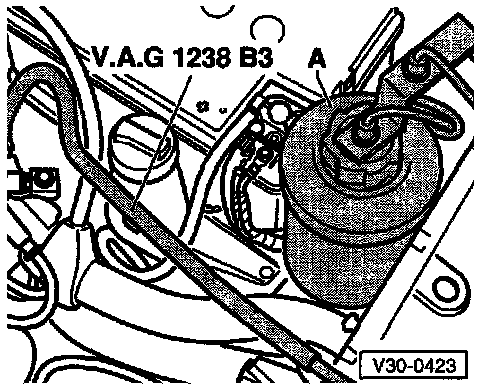
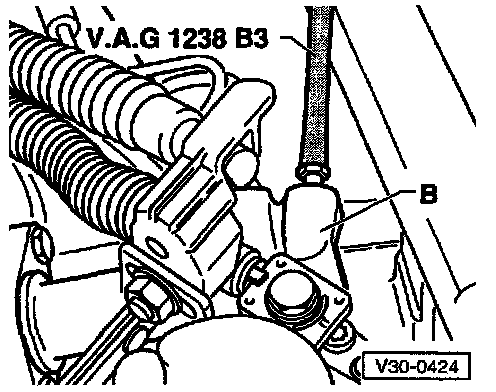

Clutch System Bleed

- Bleed clutch hydraulic system using VAG 1238/1 or VAG 1238/B brake filling and bleeding unit
- To bleed system, use VAG 1238/B bleeder hose; length = 670 mm (26.38 in)
- Connect bleeder hose to brake bleeding unit collector bottle (A) pressure hose.

- Connect bleeder hose to slave cylinder (B) and open bleeder valve
- Depress clutch pedal several times after completing bleeding process